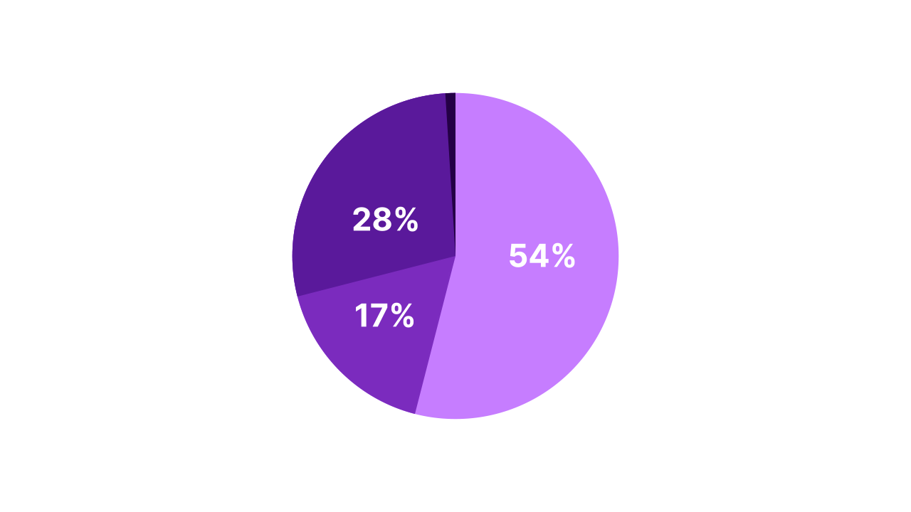
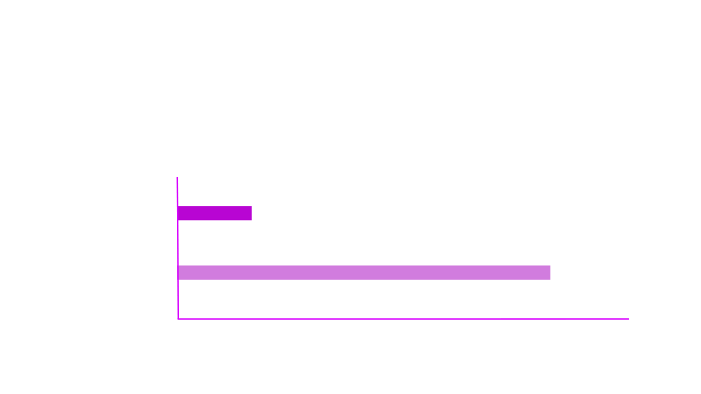

Fluxo da Equipe de Criação
Uma proposta para escalar nossa operação.
Apresentado por: Sidney Teixeira | Departamento de Criação
Diagnóstico da Situação Atual
Entendendo os desafios da equipe de criação.
Atuais Desafios da Equipe de Criação
- Crescimento da empresa: expectativa de dobrar o tamanho.
- Problemas com prazos, multitarefas e armazenamento de arquivos
Distribuição das Demandas
Total: 5300 tarefas
Tecnologias Atuais e Suas Dificuldades
Automação com Templates
Uso de After Effects + JavaScript + Essential Graphics.
Maior dificuldade no render dos templates é o L3D(4K, 30s)
Verificação Manual de Mídias
Processo simples, porém demorado, repetitivo e que interrompe o fluxo criativo.
A Base da Solução: FFMPEG
Para superar os limites, a solução está no FFMPEG, um motor gráfico por código, base para automações de vídeo robustas e eficientes sem a necessidade de interfaces pesadas.
Apresento o W4ll-E: A Nossa Ferramenta de Automação
Demonstração: Processo de Verificação Atual
Demonstração: Processo de Verificação com W4ll-E
Impacto no Armazenamento


Propósito
Criado para automatização completa do fluxo de verificação de mídias.
Funcionalidades-Chave
- Conversão de vídeos
- Criação de SuperLED
- Renomeação automática
Impacto Direto na Produtividade
Conclusão e Caminhos Futuros
Próximos Passos
- Abertura para novas funcionalidades.
- Escalar para outras equipes.
Conhecimento Adquirido
Validação da nossa capacidade interna de desenvolver soluções de alto impacto.
Visão Estratégica
- Menor dependência de empresas de SP.
- Mais controle, agilidade e inovação.